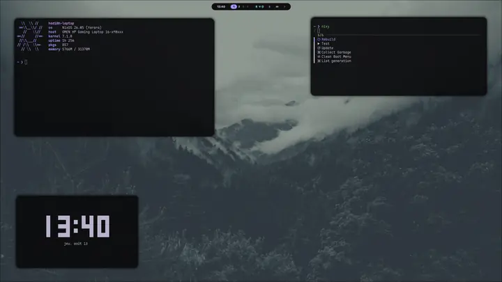
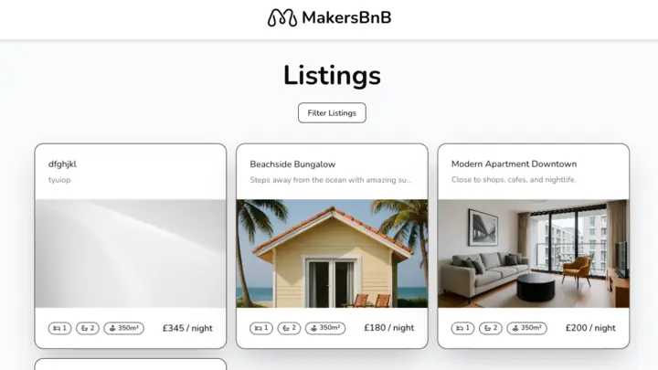
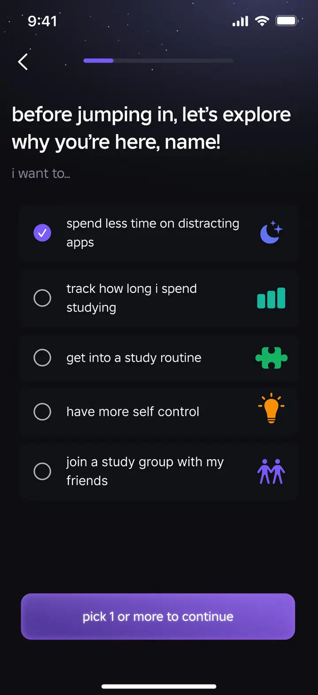
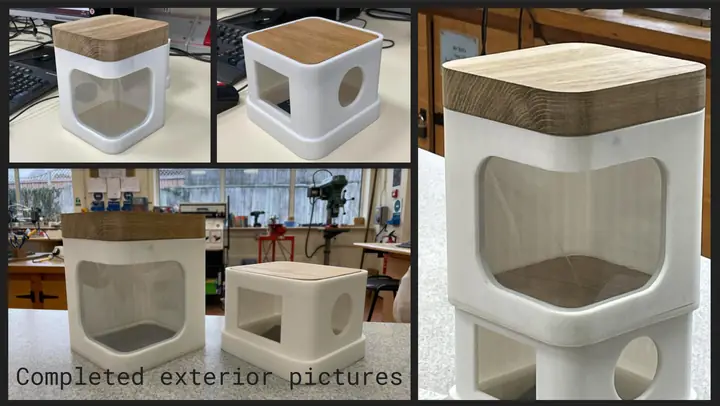

Milo Tekchandani
software engineer, London
I'm Milo. 19, London, software engineer at Google on the Search app.
Mostly backend and infrastructure work. Yes, google.com. It's still funny to me.
The rest of the time I'm writing Nix, taking apart Source engine games, or drawing badly on an iPad.
currently
Software Engineer (Apprentice), Google
currentI work on the Google Search App, on the backend and infrastructure side.
- Built developer tooling for the people working on AI Mode.
- Helped implement page transitions between the tabs on the search results page.
- A pile of smaller infrastructure work I'll fill in properly at some point.
selected projects
all 22 →
nixeljam
2026My NixOS config. Four machines, one flake, one theme file that everything reads from.
habits
2026A habit tracker that renders as a GitHub-style activity grid, for a screen bolted to my wall.

MakersBNB
2025AirBnB clone, six of us, Flask and Basecoat UI. Test-driven the whole way through.
Legacy Console Shaders
2026Makes Minecraft Java look like the Xbox 360 edition. Written for a 2013 mod, works in Iris.

Lockyn
2025A studying app for GCSE and sixth form students. Cross platform, and the UI is the actual work.

AutoPet Feeder
2024An automated pet feeder, built to a real client brief. Raspberry Pi, a servo, a 3D printed shell and an oak lid.
writing
blog →Rebuilding this site
2026-09-04 · 236 words
The old site buried everything. The new one is a search box with a website attached.
now
more →- Rewriting my NixOS config, nixeljam, for the fourth time. It runs four machines now, including the work Mac.
- habits, a Kotlin habit tracker that renders as a GitHub-style grid, for a screen bolted to my wall.
- Slowly poking at worksite, the hand-written thing at milotek.dev that has background music and I refuse to remove it.